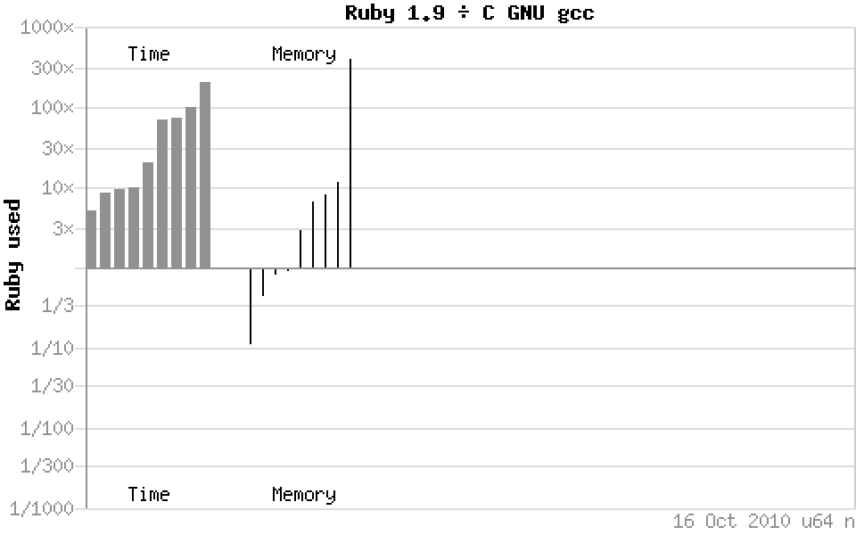
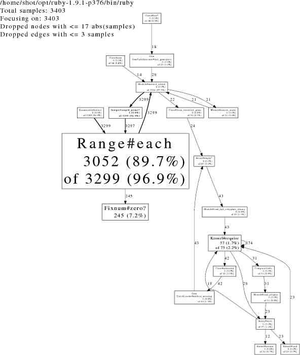
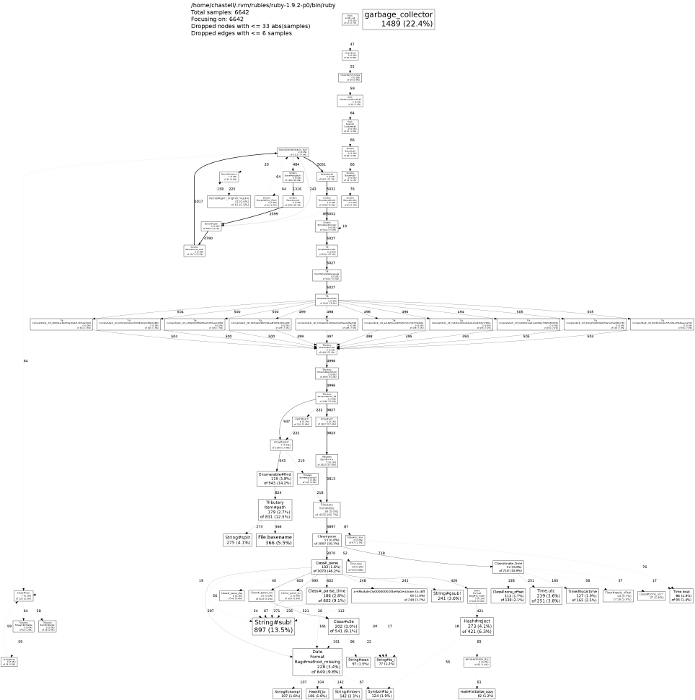
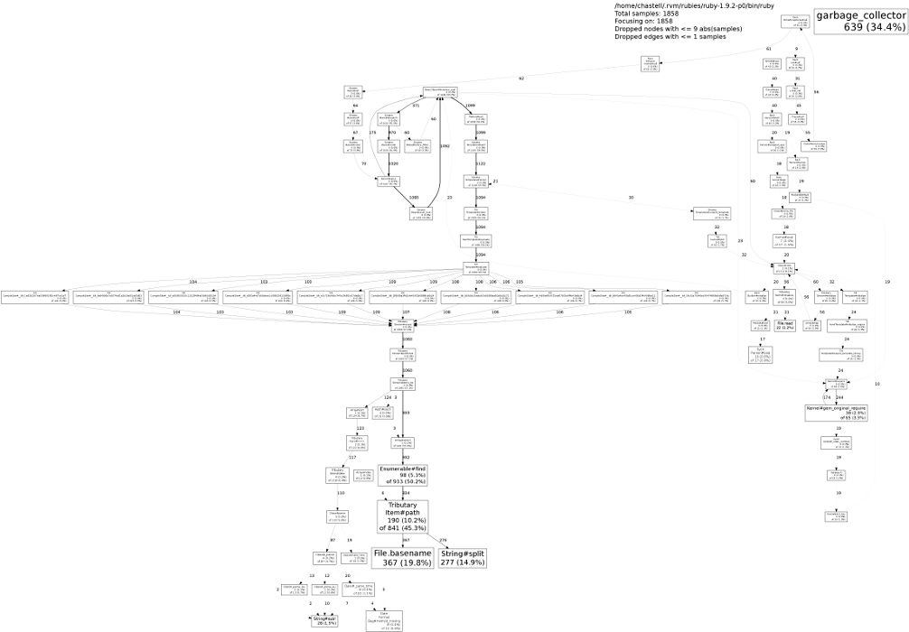
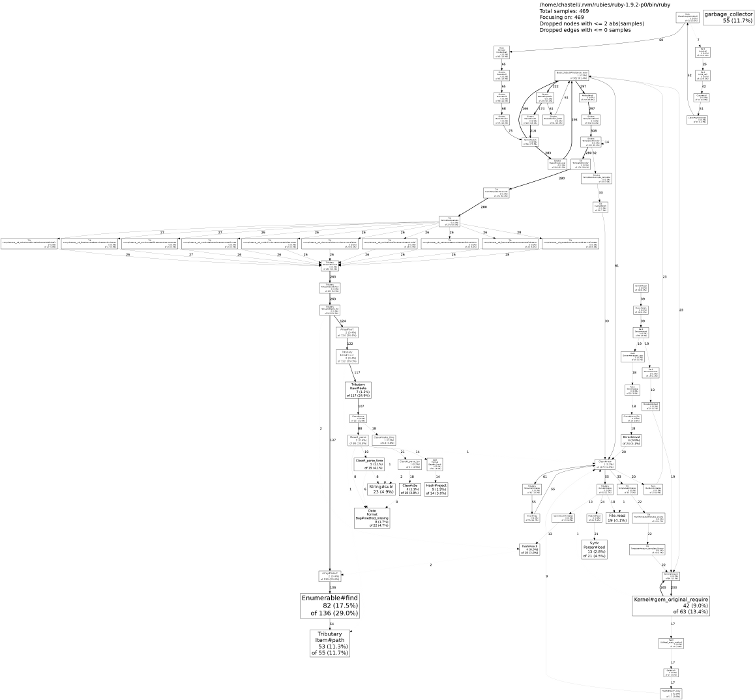
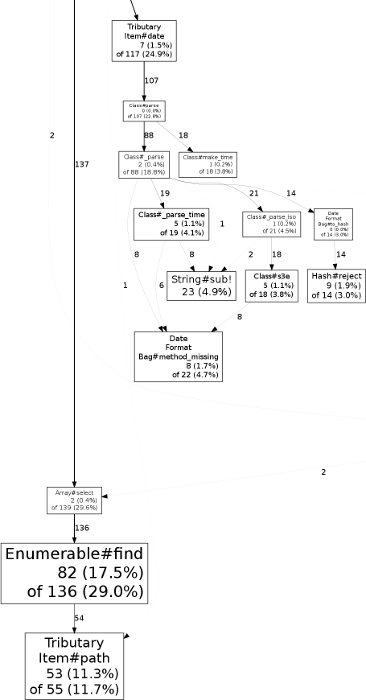

From Profiling Ruby 1.9
to Frankenstein Programming
From Profiling Ruby 1.9
to Frankenstein Programming
(or how I learned to stop worrying
and love using Ruby for scientific computations)
me, me, me.
- (that’s Piotr Szotkowski)
- (or @chastell)


Ruby’s
performance
Ruby’s
“performance”


- shootout
- .
alioth - .
debian - .
org




but… but…
benchmarks?srsly?
$ Synthetic benchmarks tell us sweet FA
$ about real world performance of code,
$ architecture
$ being a much more significant consideration
$ than the proportion of raw MIPS
$ a given language will deliver on a given platform.
$ The average netbook could happily run
$ all of Teller’s fusion bomb models
$ along with the full telemetry analysis
$ of all the Apollo missions
$ in the pauses between loading XKCD comics
$ and binning junk mail
$ without the user being any the wiser.

profiling
Ruby

Project Euler
problem 10:
The sum of the primes below 10
is 2 + 3 + 5 + 7 = 17.Find the sum of all the primes
below two million.
class Integer
def stupid_prime?
prime = true
(2...self).each { |i| prime = false if (self % i).zero? }
prime
end
end
# ruby euler.rb 2_000_000 stupid_prime?
require './integer'
limit = ARGV.first.to_i
method = ARGV.last.to_sym
sum = (2...limit).select(&method).inject :+
puts "sum(primes < #{limit}) = #{sum}"$ ruby euler.rb 10 stupid_prime?
sum(primes < 10) = 17
$ ruby euler.rb 2_000_000 stupid_prime?
^C…/integer.rb:5:in `block in stupid_prime?': Interrupt
from …/integer.rb:5:in `each'
from …/integer.rb:5:in `stupid_prime?'
from euler.rb:3:in `each'
from euler.rb:3:in `select'
from euler.rb:3:in `<main>'

$ time ruby euler.rb 1_000 stupid_prime?
sum(primes < 1000) = 76127
real 0m0.558s
user 0m0.488s
sys 0m0.068s
require 'profile'
$ time ruby -r profile euler.rb 1_000 stupid_prime?
sum(primes < 1000) = 76127
% cumulative self self total
time seconds seconds calls ms/call ms/call name
66.99 18.85 18.85 999 18.87 53.72 Range#each
14.93 23.05 4.20 497506 0.01 0.01 Fixnum#%
13.47 26.84 3.79 497720 0.01 0.01 Fixnum#zero?
1.14 27.16 0.32 104 3.08 24.04 Kernel.require
0.46 27.29 0.13 184 0.71 3.21 Array#each
0.25 27.36 0.07 630 0.11 2.08 Class#new
0.21 27.42 0.06 2640 0.02 0.03 Kernel.===
0.21 27.48 0.06 88 0.68 1.82 Gem::Dependency#initialize
0.14 27.52 0.04 305 0.13 0.23 Array#map
0.14 27.56 0.04 137 0.29 0.29 Dir#[]
[…]
real 0m28.966s
user 0m28.174s
sys 0m0.768s

gem install ruby-prof
$ time ruby-prof euler.rb 1_000 stupid_prime?
sum(primes < 1000) = 76127
Thread ID: 5985476
Total: 1.490000
%self total self wait child calls name
65.77 1.39 0.98 0.00 0.41 998 Range#each(d1)
27.52 0.41 0.41 0.00 0.00 497503 Fixnum#zero?
2.01 0.05 0.03 0.00 0.02 6 Kernel#require(d2)
1.34 1.42 0.02 0.00 1.40 998 Integer#stupid_prime?
0.67 0.01 0.01 0.00 0.00 999 <Class::Range>#allocate
0.67 0.01 0.01 0.00 0.00 2 Kernel#caller
0.67 0.01 0.01 0.00 0.00 90 Module#module_eval
0.67 0.01 0.01 0.00 0.00 2 Kernel#require(d3)
0.67 1.43 0.01 0.00 1.42 1 Range#each
[…]
real 0m1.948s
user 0m1.444s
sys 0m0.480s
$ ruby-prof -p graph_html -f euler.html euler.rb 1_000 stupid_prime?

gem install perftools.rb
$ export CPUPROFILE=euler
$ export CPUPROFILE_FREQUENCY=4000
$ time ruby -r perftools euler.rb 1_000 stupid_prime?
sum(primes < 1000) = 76127
PROFILE: interrupts/evictions/bytes = 134/0/4920
real 0m0.597s
user 0m0.488s
sys 0m0.100s
$ pprof.rb --text euler
Total: 134 samples
60 44.8% 44.8% 76 56.7% Kernel#require
28 20.9% 65.7% 32 23.9% Range#each
14 10.4% 76.1% 14 10.4% garbage_collector
8 6.0% 82.1% 8 6.0% Dir.[]
5 3.7% 85.8% 11 8.2% Kernel#eval
4 3.0% 88.8% 4 3.0% Fixnum#zero?
[…]
$ time ruby euler.rb 10_000 stupid_prime?
sum(primes < 10000) = 5736396
real 0m13.234s
user 0m13.157s
sys 0m0.092s
$ time ruby -r perftools euler.rb 10_000 stupid_prime?
sum(primes < 10000) = 5736396
PROFILE: interrupts/evictions/bytes = 3403/0/5272
real 0m13.691s
user 0m13.533s
sys 0m0.140s
$ pprof.rb --text euler
Total: 3403 samples
3052 89.7% 89.7% 3299 96.9% Range#each
245 7.2% 96.9% 245 7.2% Fixnum#zero?
57 1.7% 98.6% 75 2.2% Kernel#require
16 0.5% 99.0% 16 0.5% garbage_collector
7 0.2% 99.2% 7 0.2% Dir.[]
5 0.1% 99.4% 12 0.4% Kernel#eval
[…]
$ pprof.rb --pdf euler > euler.pdf
Dropping nodes with <= 17 samples; edges with <= 3 abs(samples)

class Integer
def stupid_prime?
prime = true
(2...self).each { |i| prime = false if (self % i).zero? }
prime
end
end
class Integer
def tedious_prime?
(2...self).each { |i| return false if (self % i).zero? }
true
end
end
class Integer
def tedious_prime?
(2...self).all? { |i| (self % i).nonzero? }
end
end$ time ruby euler.rb 20_000 tedious_prime?
sum(primes < 20000) = 21171191
real 0m7.638s
user 0m7.564s
sys 0m0.064s
$ time ruby -r perftools euler.rb 20_000 tedious_prime?
sum(primes < 20000) = 21171191
PROFILE: interrupts/evictions/bytes = 1975/0/5776
real 0m7.952s
user 0m7.860s
sys 0m0.092s
$ pprof.rb --pdf euler > euler.pdf
Dropping nodes with <= 9 samples; edges with <= 1 abs(samples)

class Integer
def tedious_prime?
(2...self).all? { |i| (self % i).nonzero? }
end
end
class Integer
def simple_prime?
(2..Math.sqrt(self).floor).all? { |i| (self % i).nonzero? }
end
end$ time ruby euler.rb 20_000 tedious_prime?
sum(primes < 20000) = 21171191
real 0m7.638s
user 0m7.564s
sys 0m0.064s
$ time ruby euler.rb 20_000 simple_prime?
sum(primes < 20000) = 21171191
real 0m0.653s
user 0m0.576s
sys 0m0.076s
$ time ruby euler.rb 200_000 simple_prime?
sum(primes < 200000) = 1709600813
real 0m3.565s
user 0m3.464s
sys 0m0.100s
- cool story, bro, but…
require 'prime'- gives us
- Integer#prime?
- like, already.
$ time ruby euler.rb 200_000 simple_prime?
sum(primes < 200000) = 1709600813
real 0m3.565s
user 0m3.464s
sys 0m0.100s
$ time ruby euler.rb 200_000 prime?
sum(primes < 200000) = 1709600813
real 0m6.734s
user 0m6.636s
sys 0m0.080s
$ time ruby -r perftools euler.rb 200_000 prime?
sum(primes < 200000) = 1709600813
PROFILE: interrupts/evictions/bytes = 1687/0/6928
real 0m6.799s
user 0m6.720s
sys 0m0.072s
$ pprof.rb --text euler
Total: 1687 samples
704 41.7% 41.7% 1191 70.6% Kernel#loop
274 16.2% 58.0% 1006 59.6% Proc#call
258 15.3% 73.3% 258 15.3% garbage_collector
150 8.9% 82.2% 150 8.9% Fixnum#divmod
68 4.0% 86.2% 1311 77.7% Prime#prime?
62 3.7% 89.9% 584 34.6% Prime::Generator23#succ
53 3.1% 93.0% 68 4.0% Kernel#require
17 1.0% 94.0% 1208 71.6% Prime::PseudoPrimeGenerator#each
13 0.8% 94.8% 1328 78.7% Class#prime?
12 0.7% 95.5% 1340 79.4% Integer#prime?
11 0.7% 96.1% 21 1.2% Prime::Generator23#initialize
11 0.7% 96.8% 11 0.7% Prime::PseudoPrimeGenerator#initialize
10 0.6% 97.4% 1273 75.5% BasicObject#singleton_method_added
9 0.5% 97.9% 1349 80.0% Range#each
7 0.4% 98.3% 7 0.4% Dir.[]
4 0.2% 98.6% 4 0.2% Class#instance
4 0.2% 98.8% 12 0.7% Kernel#eval
4 0.2% 99.1% 4 0.2% Prime::Generator23.allocate
[…]
$ pprof.rb --pdf euler > euler.pdf
Dropping nodes with <= 8 samples; edges with <= 1 abs(samples)

require 'benchmark'
require 'benchmark'
require 'integer'
require 'prime'
Benchmark.bmbm do |bench|
bench.report 'stupid:' do
(2..10_000).each { |i| i.stupid_prime? }
end
bench.report 'tedious:' do
(2..10_000).each { |i| i.tedious_prime? }
end
bench.report 'simple:' do
(2..10_000).each { |i| i.simple_prime? }
end
bench.report 'clever:' do
(2..10_000).each { |i| i.clever_prime? }
end
bench.report 'stdlib:' do
(2..10_000).each { |i| i.prime? }
end
end$ ruby benchmark.rb
Rehearsal --------------------------------------------
stupid: 11.890000 0.010000 11.900000 ( 11.945490)
tedious: 2.000000 0.000000 2.000000 ( 2.015766)
simple: 0.070000 0.000000 0.070000 ( 0.071036)
clever: 0.050000 0.000000 0.050000 ( 0.042739)
stdlib: 0.140000 0.000000 0.140000 ( 0.140070)
---------------------------------- total: 14.160000sec
user system total real
stupid: 11.900000 0.020000 11.920000 ( 11.974419)
tedious: 1.990000 0.000000 1.990000 ( 2.001525)
simple: 0.070000 0.000000 0.070000 ( 0.067571)
clever: 0.040000 0.000000 0.040000 ( 0.043885)
stdlib: 0.130000 0.000000 0.130000 ( 0.131435)
require 'benchmark'
require 'integer'
require 'prime'
Benchmark.bmbm do |bench|
bench.report 'simple:' do
(2..100_000).each { |i| i.simple_prime? }
end
bench.report 'clever:' do
(2..100_000).each { |i| i.clever_prime? }
end
bench.report 'stdlib:' do
(2..100_000).each { |i| i.prime? }
end
end$ ruby benchmark-stdlib.rb
Rehearsal -------------------------------------------
simple: 1.160000 0.000000 1.160000 ( 1.168574)
clever: 0.670000 0.000000 0.670000 ( 0.669668)
stdlib: 2.140000 0.000000 2.140000 ( 2.158855)
---------------------------------- total: 3.970000sec
user system total real
simple: 1.170000 0.000000 1.170000 ( 1.169250)
clever: 0.670000 0.000000 0.670000 ( 0.669276)
stdlib: 2.160000 0.020000 2.180000 ( 2.186799)
class Integer
def simple_prime?
(2..Math.sqrt(self).floor).all? { |i| (self % i).nonzero? }
end
def clever_prime?
return true if self == 2
return false if self.even?
3.step(Math.sqrt(self).floor, 2).all? { |i| (self % i).nonzero? }
end
endprofiling web applications
- Rack-based for starters
- (Rails is Rack-based)
- Sinatra app + Rack server
- tributary: a tiny blogging engine (yay!)
- let’s ApacheBench an install with many items
$ export CPUPROFILE=profile
$ rackup -r perftools
[2010-10-21 14:59:39] INFO WEBrick 1.3.1
[2010-10-21 14:59:39] INFO ruby 1.9.2 (2010-08-18) [x86_64-linux]
[2010-10-21 14:59:39] INFO WEBrick::HTTPServer#start: pid=346 port=9292
[…]
$ ab -n 10 http://localhost:9292/
This is ApacheBench, Version 2.3 <$Revision: 655654 $>
[…]
Time taken for tests: 66.078 seconds
[…]
Requests per second: 0.15 [#/sec] (mean)
Time per request: 6607.803 [ms] (mean)
Time per request: 6607.803 [ms] (mean, across all concurrent requests)
Transfer rate: 0.41 [Kbytes/sec] received
Connection Times (ms)
min mean[+/-sd] median max
Connect: 0 0 0.0 0 0
Processing: 6536 6608 105.3 6581 6879
Waiting: 6535 6607 105.3 6581 6878
Total: 6536 6608 105.4 6581 6879
[…]
$ pprof.rb --pdf profile > profile.pdf
Dropping nodes with <= 33 samples; edges with <= 6 abs(samples)


module Tributary class Item < OpenStruct
def date
case @table[:date]
when Date then @table[:date].to_time
when String then Time.parse @table[:date]
when Time then @table[:date]
end
end
end endmodule Tributary class Item < OpenStruct
def date
@date ||= case @table[:date]
when Date then @table[:date].to_time
when String then Time.parse @table[:date]
when Time then @table[:date]
end
end
end end$ ab -n 10 http://localhost:9292/
[…]
Time taken for tests: 18.525 seconds
[…]
Requests per second: 0.54 [#/sec] (mean)
Time per request: 1852.549 [ms] (mean)
Time per request: 1852.549 [ms] (mean, across all concurrent requests)
Transfer rate: 1.46 [Kbytes/sec] received
Connection Times (ms)
min mean[+/-sd] median max
Connect: 0 0 0.0 0 0
Processing: 1797 1852 102.2 1819 2140
Waiting: 1797 1852 102.2 1819 2140
Total: 1797 1852 102.2 1819 2140
Percentage of the requests served within a certain time (ms)
50% 1819
66% 1837
75% 1840
80% 1846
90% 2140
95% 2140
98% 2140
99% 2140
100% 2140 (longest request)
$ pprof.rb --pdf profile > profile.pdf
Dropping nodes with <= 9 samples; edges with <= 1 abs(samples)


module Tributary class Item < OpenStruct
def path
File.basename(@file, '.md').split('.').first
end
end endmodule Tributary class Item < OpenStruct
def path
@path ||= File.basename(@file, '.md').split('.').first
end
end end$ ab -n 10 http://localhost:9292/
[…]
Time taken for tests: 4.298 seconds
[…]
Requests per second: 2.33 [#/sec] (mean)
Time per request: 429.797 [ms] (mean)
Time per request: 429.797 [ms] (mean, across all concurrent requests)
Transfer rate: 6.28 [Kbytes/sec] received
Connection Times (ms)
min mean[+/-sd] median max
Connect: 0 0 0.0 0 0
Processing: 390 430 103.3 401 723
Waiting: 390 429 103.3 400 723
Total: 390 430 103.4 401 724
Percentage of the requests served within a certain time (ms)
50% 401
66% 401
75% 403
80% 403
90% 724
95% 724
98% 724
99% 724
100% 724 (longest request)
$ pprof.rb --pdf profile > profile.pdf
Dropping nodes with <= 9 samples; edges with <= 1 abs(samples)


but what if we actually
cached
the whole item stream…?
$ ab -n 10 http://localhost:9292/
[…]
Time taken for tests: 0.919 seconds
[…]
Requests per second: 10.88 [#/sec] (mean)
Time per request: 91.883 [ms] (mean)
Time per request: 91.883 [ms] (mean, across all concurrent requests)
Transfer rate: 29.37 [Kbytes/sec] received
Connection Times (ms)
min mean[+/-sd] median max
Connect: 0 0 0.2 0 1
Processing: 22 92 191.9 37 637
Waiting: 22 91 191.9 36 637
Total: 22 92 192.1 37 638
Percentage of the requests served within a certain time (ms)
50% 37
66% 39
75% 39
80% 45
90% 638
95% 638
98% 638
99% 638
100% 638 (longest request)
…and un-cached
Item#date and Item#path?
$ ab -n 10 http://localhost:9292/
[…]
Time taken for tests: 7.116 seconds
[…]
Requests per second: 1.41 [#/sec] (mean)
Time per request: 711.577 [ms] (mean)
Time per request: 711.577 [ms] (mean, across all concurrent requests)
Transfer rate: 3.79 [Kbytes/sec] received
Connection Times (ms)
min mean[+/-sd] median max
Connect: 0 0 0.1 0 0
Processing: 31 711 2119.9 44 6745
Waiting: 30 711 2119.9 43 6745
Total: 31 712 2120.0 44 6745
Percentage of the requests served within a certain time (ms)
50% 44
66% 44
75% 44
80% 44
90% 6745
95% 6745
98% 6745
99% 6745
100% 6745 (longest request)
||
||
||
speeding
Ruby
up
˙
alternative
implementations
- JRuby
- MacRuby
- Rubinius

fast
libraries
- NArray
- Ruby/GSL
- ruby-boost-regex
- google_hash

Strangelove
programming

Ruby/DL
&
Ruby FFI
gem install levenshtein
- Levenshtein distance between
two Strings, Arrays, etc. - Strings, Arrays and Arrays
of Strings: optimized C - everything else: C
- if C not available: Ruby
bridges
- C via MRI
- D via RuDy
- Haskell via Hubris
- Java via JRuby
- R via Rserve
Frankenstein
programming
what about embedding
foreign language?
(after all, you can do Assembler in C…)
Yes We Can:
RubyInline
- JavaInline
- Hubris
require 'inline'
class Integer
def simple_prime?
(2..Math.sqrt(self).floor).all? { |i| (self % i).nonzero? }
end
inline do |builder|
builder.c '
VALUE inline_simple() {
long number = NUM2LONG(self);
long i;
for (i = 2; i <= floor(sqrt(number)); i++) {
if (number % i == 0) return Qfalse;
}
return Qtrue;
}
'
end
end$ time ruby euler.rb 200_000 simple_prime?
sum(primes < 200000) = 1709600813
real 0m3.121s
user 0m3.070s
sys 0m0.030s
$ time ruby euler.rb 200_000 inline_simple
sum(primes < 200000) = 1709600813
real 0m0.446s
user 0m0.410s
sys 0m0.030s
$ time ruby euler.rb 200_000 inline_clever
sum(primes < 200000) = 1709600813
real 0m0.305s
user 0m0.270s
sys 0m0.030s
require 'inline'
class Integer
inline do |builder|
builder.c '
VALUE inline_clever() {
long number = NUM2LONG(self);
if (number == 2) return Qtrue;
if (number % 2 == 0) return Qfalse;
long i = 3;
while (i <= floor(sqrt(number))) {
if (number % i == 0) return Qfalse;
i = i + 2;
}
return Qtrue;
}
'
end
end$ time ruby euler.rb 2_000_000 inline_clever
sum(primes < 2000000) = 142913828922
real 0m3.815s
user 0m3.770s
sys 0m0.030s
$ time ruby -r perftools euler.rb 2_000_000 inline_clever
sum(primes < 2000000) = 142913828922
PROFILE: interrupts/evictions/bytes = 378/0/792
real 0m3.843s
user 0m3.770s
sys 0m0.060s
$ pprof.rb --pdf euler > euler.pdf
Dropping nodes with <= 1 samples; edges with <= 0 abs(samples)

require 'benchmark'
require 'integer'
require 'prime'
Benchmark.bmbm do |bench|
bench.report 'simple:' do
(2..100_000).each { |i| i.simple_prime? }
end
bench.report 'clever:' do
(2..100_000).each { |i| i.clever_prime? }
end
bench.report 'stdlib:' do
(2..100_000).each { |i| i.prime? }
end
bench.report 'inline:' do
(2..100_000).each { |i| i.inline_clever }
end
end$ ruby benchmark-inline.rb
Rehearsal -------------------------------------------
simple: 1.170000 0.010000 1.180000 ( 1.187729)
clever: 0.700000 0.000000 0.700000 ( 0.702421)
stdlib: 2.560000 0.000000 2.560000 ( 2.569368)
inline: 0.070000 0.000000 0.070000 ( 0.075160)
---------------------------------- total: 4.510000sec
user system total real
simple: 1.170000 0.000000 1.170000 ( 1.184051)
clever: 0.700000 0.000000 0.700000 ( 0.697912)
stdlib: 2.570000 0.000000 2.570000 ( 2.574813)
inline: 0.070000 0.000000 0.070000 ( 0.075140)
Frankenstein problems
- from Rob Pike’s Public Static Void
talk on Go at OSCON 2010 foo::Foo *myFoo = new foo::Foo(foo::FOO_INIT)public static <I, O> ListenableFuture<O> chain (ListenableFuture<I> input, Function<? super I, ? extends ListenableFuture<? extends O>> function)
Frankenstein problems
from Rob Pike’s Public Static Void
talk on Go at OSCON 2010
static {
defaultPorts.put("http", new Integer(80));
defaultPorts.put("shttp", new Integer(80));
defaultPorts.put("https", new Integer(443));
usesGenericSyntax.put("http", Boolean.TRUE);
usesGenericSyntax.put("https", Boolean.TRUE);
usesGenericSyntax.put("shttp", Boolean.TRUE);
}
private static final boolean pathsEqual(String p1, String p2)the right solution?
the right solution?
require 'prime'
puts Prime.take_while { |p| p < 2_000_000 }.inject :+$ time ruby euler.rb 2_000_000 inline_clever
sum(primes < 2000000) = 142913828922
real 0m3.815s
user 0m3.770s
sys 0m0.030s
$ time ruby take_while.rb
142913828922
real 0m3.553s
user 0m3.530s
sys 0m0.000s
world domination plans
- first profile
- then optimise algorithms
(cache? parallelise? benchmark!) - rewrite last
(using the right tool) - search: suprisingly many common problems
are actually already solved…
whither else?
- automagic Ruby-to-C translators
- ruby-optimization mailing list
- threads and processes
- DRb and BrB (DRb on EM)
- memprof, CUDA, Thrust, Coal…
but why not write optimized code right from the start?
- well, because it’s premature optimisation!
$ We should forget about small efficiencies,
$ say about 97% of the time:
$ premature optimization is the root of all evil.


links
| CiviCRM: | civicrm.org |
|---|---|
| Computer Language Benchmarks Game: | shootout.alioth.debian.org |
| ruby-prof: | github.com / rdp / ruby-prof |
| perftools.rb: | github.com / tmm1 / perftools.rb |
| Project Euler: | projecteuler.net |
| JRuby: | jruby.org |
| MacRuby: | macruby.org |
| Rubinius: | rubini.us |
| Ruby VM Shootout: | mitkokostov.info / post / 1108719323 / ruby-vm-shootout |
| NArray: | narray.rubyforge.org |
| Ruby/GSL: | rb-gsl.rubyforge.org |
| ruby-boost-regex: | github.com / michaeledgar / ruby-boost-regex |
| google_hash: | github.com / rdp / google_hash |
| levenshtein: | rubyforge.org / projects / levenshtein |
links (cont.)
| RuDy: | github.com / tomash / rudy |
|---|---|
| Hubris: | github.com / mwotton / Hubris |
| Rserve Ruby client: | github.com / clbustos / Rserve-Ruby-client |
| RubyInline: | zenspider.com / ZSS / Products / RubyInline |
| JavaInline: | kenai.com / projects / java-inline |
| Rob Pike’s Public Static Void: | www.youtube.com / watch?v=5kj5ApnhPAE |
| ruby2c: | rubyforge.org / projects / ruby2c |
| crystalizer: | github.com / rdp / crystalizer |
| ruby-optimization ML: | groups.google.com / group / ruby-optimization |
| DRb: | segment7.net/projects / ruby / drb |
| BrB: | www.tricksonrails.com / 2010 / 04 / introducing-brb-extremely-fast-interface-for-doing-distributed-ruby |
| memprof: | github.com / ice799 / memprof |
| Ruby and CUDA and Thrust, Oh My!: | coreyhoffstein.com / 2009 / 06 / 15 / ruby-and-cuda-and-thrust-oh-my |
| Coal: | dismaldenizen.github.com / coal |
| Geekz Shop: | geekz.co.uk / shop |
credits
| IM Fell English & Inconsolata fonts: | code.google.com / webfonts |
|---|---|
| Dr Jekyll and Mr Hyde: | archive.org / details / DrJekyllandMrHyde |
| Python Cookbook: | oreilly.com / catalog / 9780596001674 |
| Matz loves Python: | flickr.com / john_lam / 1910968816 (via Aman Gupta) |
| Extreme Slow Food: | www.futures.hawaii.edu / 2008 / 09 / dator-on-slow-food.php |
| A Taste of Slow: | slowfoodaustralia.com.au / events / national / a-taste-of-slow |
| …and he thinks I’m slow: | www.computerrepairmaintenance.com / computer-help / what-can-i-do-to-fix-my-slow-computer |
| WALK WAY DRIVE DEAD SLOW: | flickr.com / 94801434@N00 / 4585697131 |
| SLOW GOATS: | flickr.com / teflon / 3097018067 |
| Ellen McHugh quote: | ruby-talk:355820 |
| Cops stumble upon…: | gpsobsessed.com / cops-stumble-upon-a-2-acre-marijuana-field-in-google-earth |
| Donald Knuth quote: | Structured Programming with go to Statements |
| Recursive Homeboys Principle: | laughingsquid.com / jacob-appelbaum-donald-knuth-demonstrate-the-recursive-homeboys-principle |